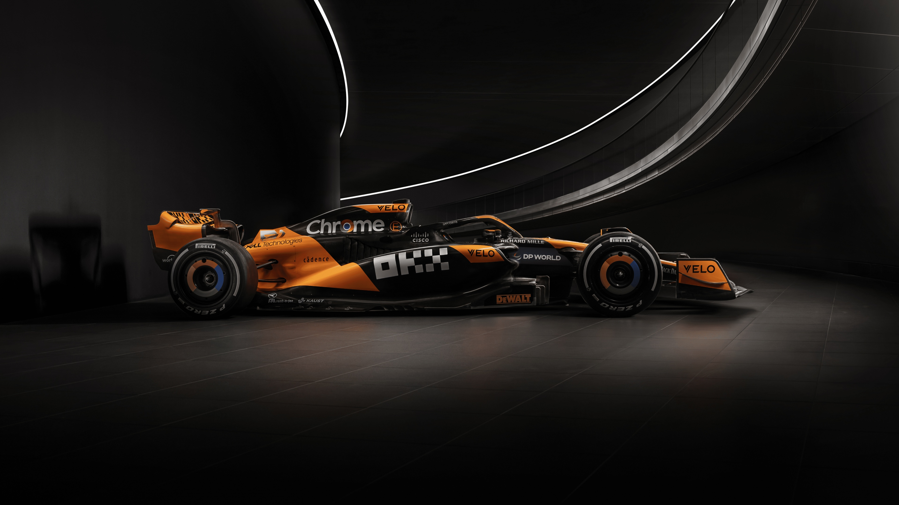
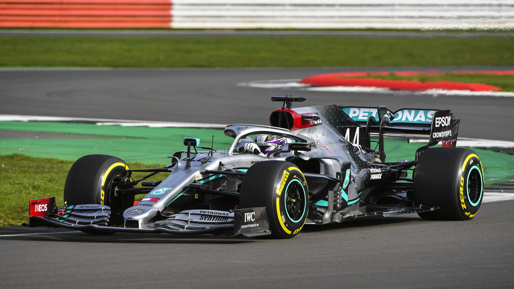
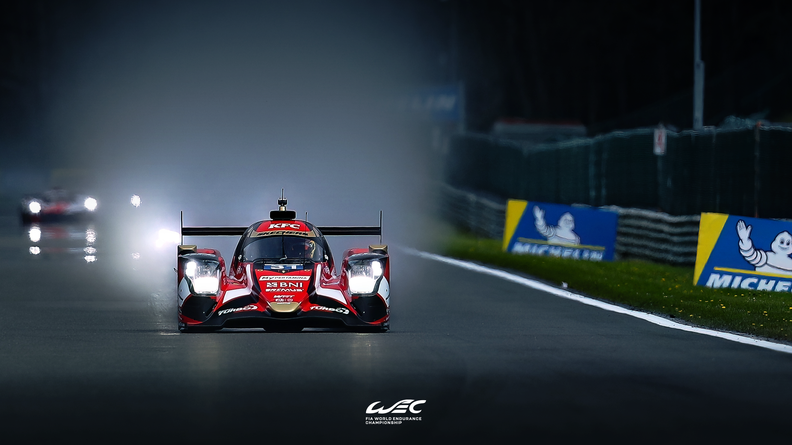
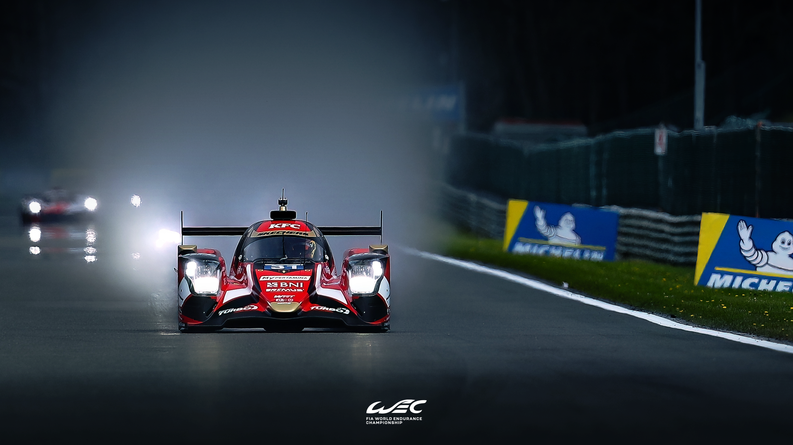

Formula 1
Top Tier of Single Seater Racing, featuring 10 Teams and 20 Drivers, competing at 24 Circuits in 21 Countries



Formula 1
Top Tier of Single Seater Racing, featuring 10 Teams and 20 Drivers, competing at 24 Circuits in 21 Countries
World Endurance Championship
Top Flight of Global Sportscar Racing, Featuring the 24 Heures du Mans, LMH + LMDh HyperCars, and the new LMGT3 Class! (This page only discusses Car Models found in the 2024 World Endurance Championship)
 


IMSA WeatherTech Sportscar Championship
Top Flight of American Sportscar Racing, Featuring the Rolex 24, 12 Hours of Sebring, and Petit Le Mans, featuring the same LMH, LMDh + GT3 Platforms, the IMSA WTSC also Features the LMP2 Class on a Regular Basis, after the class was removed from the WEC due to Grid Size Limits, only appearing at the 24 Heures du Mans. (This page only discusses Car Models found in the 2024 IMSA WeatherTech Sports Car Championship)